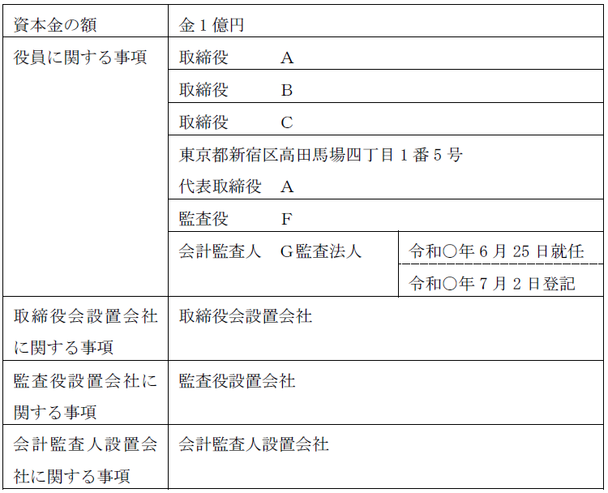
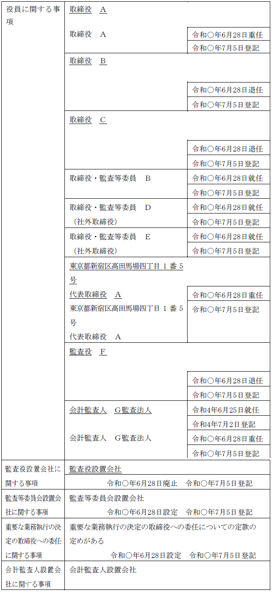
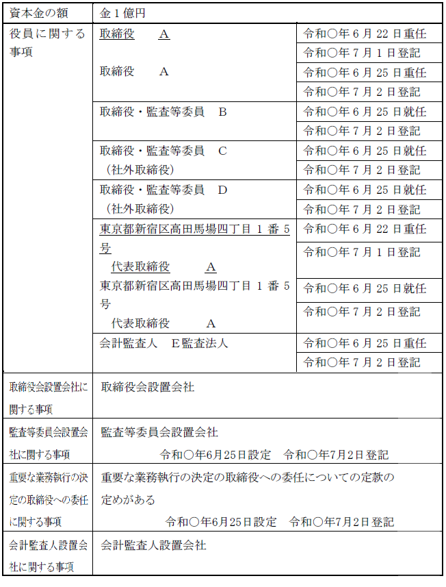

第２編 株式会社
第２章 機関
第９節 監査等委員会設置会社
：監査等委員会を置く株式会社（会社法2条11号の2）
| 構成員 | 監査等委員会は、3人以上の監査等委員である取締役から構成され、その過半数は社外取締役でなければならない（331Ⅵ、399の2ⅠⅡ）。 |
| 設置義務 | 監査等委員会設置会社には、取締役会及び会計監査人を置かなければならず、監査役を置いてはならない（327Ⅰ③ⅣⅤ）。 |
※ 常勤の監査等委員を定める規定は設けられていない
1. 選任
取締役の選任決議は、監査等委員である取締役とそれ以外の取締役とを区別してしなければならない（会社法329条2項）。監査等委員会設置会社を設立する場合も同様である（会社法38条2項、会社法88条2項）。
監査等委員は、取締役でなければならないことから（会社法399条の2第2項）、株主総会の決議（会社法341条の普通決議）により選任される（会社法329条1項）。
そして、取締役が、監査等委員である取締役の選任に関する議案を株主総会に提出するには、監査等委員会の同意を得なければならない（会社法344条の2第1項）。
2. 解任
(1) 通常の株式会社の場合
監査等委員でない取締役は、株主総会の決議（会社法341条の普通決議）によりいつでも解任できる（会社法339条1項）。
監査等委員である取締役を解任するには、株主総会の特別決議を要する（会社法309条2項7号）。監査等委員である取締役の独立性を監査役と同様に強化する趣旨である。
(2) 設立の場合
発起設立の場合、発起人は、その過半数による決定をもって、株式会社成立までの間、設立時役員等を解任することができるが（会社法42条、43条1項）、設立時監査等委員である設立時取締役を解任する場合にあっては、3分の2以上に当たる多数をもって決定する（会社法43条1項括弧書）。
募集設立の場合、設立時取締役（設立時監査等委員である設立時取締役を含む）の解任は、創立総会の決議による（会社法91条）。
なお、監査等委員会が選定する監査等委員は、株主総会において、監査等委員である取締役以外の取締役の選任若しくは解任又は辞任について監査等委員会の意見を述べることができる（会社法342条の2第4項）。
3. 兼任禁止
監査等委員である取締役は、以下の者との兼任が禁止される（会社法331条3項）。
| ①業務執行取締役 |
| ②支配人 |
| ③その他の使用人 |
| ④執行役 |
| ⑤会計参与（会計参与が法人であるときは、その職務を行うべき社員） |
※①～⑤は、子会社の場合も含む（ex. 子会社の業務執行取締役が親会社の監査等委員である取締役に就任することは、兼任禁止規定に反する。）
※④の執行役の兼任禁止は、子会社の場合のみである。監査等委員会設置会社は執行役を置くことができないため、当該株式会社についての兼任禁止規定はない。
※⑤の会計参与の兼任禁止は、子会社の場合のみである。当該株式会社については、会計参与の欠格事由として禁止されている（会社法333条3項1号）。
4. 任期
(1) 監査等委員でない取締役
監査等委員会設置会社においては、取締役（監査等委員であるものを除く）の任期は、選任後1年以内に終了する事業年度のうち最終のものに関する定時株主総会終結の時までとされている（会社法332条3項、1項）。
非公開会社であっても任期を伸長することはできないが、短縮することはできる。
(2) 監査等委員である取締役
監査等委員である取締役の任期は、選任後2年以内に終了する事業年度のうち最終のものに関する定時株主総会終結の時までとされている点は原則どおりであるが、定款又は株主総会の決議によってもその任期を短縮することはできない（会社法332条4項）。実効的な監査ができるよう、身分保障がされているのである。
もっとも、定款によって、任期の満了前に退任した監査等委員である取締役の補欠として選任された監査等委員である取締役の任期を退任した監査等委員である取締役の任期の満了する時までとすることは可能である（会社法332条5項、1項本文）。
なお、非公開会社であっても任期を伸長することはできない。
| 原則 | 取締役会は、業務執行の決定、取締役の職務の執行の監督、代表取締役の選定・解職を行い（399の13Ⅰ）（※1）、原則として、重要な業務執行の決定を取締役に委任することができない（399の13Ⅳ）。 |
| 例外（※2） | 以下の①又は②に該当する場合は委任することができる ① 取締役の過半数が社外取締役である場合 ② 取締役会の決議によって重要な業務執行の決定の全部若しくは一部を取締役に委任することができる旨を定款で定めた場合 |
※1 代表取締役は監査等委員である取締役以外の取締役の中から選定しなければならない（会社法399条の13第3項）
※2 指名委員会等設置会社において、執行役に決定の委任をすることができないものとされている事項と同様の事項については委任できない（会社法399条の13第5項本文）。
1. 総説
取締役会の監督機能とは異なる業務執行をしない取締役（社外取締役）により業務執行と監督を分化し、経営監督機能を強化する観点から、監査等委員会の権限と監査等委員である取締役の権限とが定められている。
2. 監査等委員会の権限
(1) 職務
監査等委員会の職務は以下の事項等である。
①取締役（会計参与設置会社にあっては、取締役及び会計参与）の職務の執行の監査及び監査報告書の作成を行う（会社法399条の2第3項1号）。
②株主総会に提出する会計監査人の選任、会計監査人を再任しないこと及び解任に関する議案の内容を決定する（会社法399条の2第3項2号）。
監査等委員会の構成員は取締役であることから、その監査権限は、取締役の職務の適法性のみならず妥当性についても及ぶとされる。
(2) 業務及び財産の状況の調査・報告聴取
(a) 自社に対しての権限
監査等委員会が選定する監査等委員は、いつでも、取締役（会計参与設置会社においては、取締役及び会計参与）及び支配人その他の使用人に対し、その職務の執行に関する事項の報告を求め、又は監査等委員会設置会社の業務及び財産の状況を調査できる（会社法399条の3第1項）。
(b) 子会社に対しての権限
監査等委員会が選定する監査等委員は、監査等委員会の職務を執行するため必要があるときは、監査等委員会設置会社の子会社に対して事業の報告を求め、又はその子会社の業務及び財産の状況を調査できる（会社法399条の3第2項）。
(c) 監査等委員の指定
①監査等委員会設置会社と取締役との間の訴訟についての会社代表
監査等委員会設置会社と取締役との間の訴訟においては、監査等委員会が選定する監査等委員が監査等委員会設置会社を代表する（会社法399条の7第1項2号）。
ただし、監査等委員が訴訟の当事者であるときは、株主総会が定める者（それがなければ取締役会が定める者）が監査等委員会設置会社を代表する（会社法399条の7第1項1号）。
②取締役会の招集権
監査等委員会設置会社においては、招集権者の定めがある場合であっても、監査等委員会が選定する監査等委員は、取締役会を招集することができる（会社法399条の14）。
3. 各監査等委員の権限
(1) 取締役会への報告義務
各監査等委員は、取締役が不正の行為をし、若しくは当該行為をするおそれがあると認めるとき、又は法令若しくは定款に違反する事実若しくは不当な事実があると認めるときは、遅滞なく、その旨を取締役会に報告しなければならない（会社法399条の4）。
(2) 株主総会への報告義務
各監査等委員は、取締役が株主総会に提出しようとする議案、書類その他法務省令で定めるものについて法令若しくは定款に違反し、又は著しく不当な事項があると認めるときは、その旨を株主総会に報告しなければならない（会社法399条の5）。
(3) 差止請求
各監査等委員は、取締役が監査等委員会設置会社の目的の範囲外の行為その他法令若しくは定款に違反する行為をし、又はこれらの行為をするおそれがある場合において、当該行為によって当該監査等委員会設置会社に著しい損害が生ずるおそれがあるときは、当該取締役に対し、当該行為をやめることを請求することができる（会社法399条の6第1項）。
裁判所が、取締役に対し、仮処分によりその行為をやめることを命ずるときは、監査等委員に担保を立てさせないとされている（会社法399条の6第2項）。
1. 招集
(1) 招集権者
各監査等委員が招集し、特定の招集権者を定めることはできない（会社法399条の8）。
(2) 招集手続
監査等委員会の日の1週間（これを下回る期間を定款で定めた場合にあっては、その期間）前までに、各監査等委員に対してその通知を発しなければならない（会社法399条の9第1項）。
なお、監査等委員の全員の同意があるときは、招集手続を経ることなく開催することができる（会社法399条の9第2項）。
2. 決議
議決に加わることができる監査等委員の過半数が出席し、その過半数をもって行う（会社法399条の10第1項）。
この決議について特別の利害関係を有する監査等委員は、議決に加わることができない（会社法399条の10第2項）。
なお、決議に参加した監査等委員が議事録に異議をとどめないときは、その決議に賛成したものと推定される（会社法399条の10第5項）。
3. 議事録
(1) 作成
監査等委員会の議事については、法務省令で定めるところにより、議事録を作成しなければならない（会社法399条の10第3項、4項）。
出席した監査等委員は上記議事録に署名又は記名押印しなければならず、電磁的記録をもって作成されているときは、署名又は記名押印に代わる措置をとらなければならない（会社法399条の10第3項、4項）。
当該議事録は、監査等委員会の日から10年間、本店に備え置かなければならない（会社法399条の11第1項）。
(2) 閲覧等
(a) 株主
株主はその権利を行使するために必要があるときは、裁判所の許可を得て、監査等委員会の議事録の閲覧・謄写を請求することができる（会社法399条の11第2項）。
(b) 債権者・親会社社員
会社債権者は取締役又は会計参与の責任を追及するため必要があるとき、親会社社員はその権利を行使するため必要があるときは、裁判所の許可を得て議事録の閲覧・謄写を求めることができる（会社法399条の11第3項）。
1. 報酬の定め方
監査等委員会設置会社においては、報酬等は、監査等委員である取締役とそれ以外の取締役とを区別して定めなければならない（会社法361条2項、1項）。
監査等委員の報酬等は、通常の取締役同様、定款又は株主総会の決議によって定める（会社法361条1項）。指名委員会等設置会社と異なり、報酬委員会がないからである。定款又は株主総会に具体的な配分がないときは、報酬等は監査等委員である取締役の協議によって定める（会社法361条3項）。
2. 意見陳述権
監査等委員である取締役は、株主総会において、監査等委員である取締役の報酬等について意見を述べることができる（会社法361条5項）。
監査等委員会が選定する監査等委員は、株主総会において、監査等委員である取締役以外の取締役の報酬等について監査等委員会の意見を述べることができる（会社法361条6項）。
1. 登記すべき事項
監査等委員会設置会社に関して登記すべき事項は、以下の事項である（会社法911条3項22号）。
・監査等委員会設置会社である旨
・監査等委員である取締役及びそれ以外の取締役の氏名
・取締役のうち社外取締役であるものについて、社外取締役である旨
監査等委員会設置会社において社外取締役である旨を記載しなければならない取締役は、監査等委員である取締役に限られない（平27.2.6民商14「会社法の一部を改正する法律等の施行に伴う商業・法人登記記録例について」第1節第1の2参照）。
・第399条の13第6項の規定による重要な業務執行の決定の取締役への委任についての定款の定めがあるときは、その旨
この定めの有無により取締役会の性質が大きく変わるため、この定めの有無は機関の設置の有無に近いといえ、登記事項とされている。
【申請例25 監査等委員会設置会社の定め 設定】
事例： 令和○年6月28日、別紙1の登記がされた株式会社において、定時株主総会で監査等委員会設置会社の定め、重要な業務執行の決定の取締役への委任についての定款の定めを設ける決議がされ、次の者が選任された。被選任者は席上就任を承諾した。なお、会計監査人についての決議はなされなかった。また、当会社の本店の所在地を管轄する登記所の管轄区域内にＧ監査法人の主たる事務所はない。
取締役Ａ
取締役・監査等委員Ｂ
取締役・監査等委員（社外取締役）Ｄ
取締役・監査等委員（社外取締役）Ｅ
同日、取締役会（全員出席）において、次の者が選定された。被選定者は席上就任を承諾した。なお、取締役会議事録には代表取締役Ａの登記所届出印は押印されていない。
代表取締役Ａ（東京都新宿区高田馬場四丁目1番5号）
別紙1
登記事項証明書の内容の抜粋

| 1. 登記の事由 | 監査等委員会設置会社の定め設定 重要な業務執行の決定の取締役への委任についての定款の定め設定 監査役設置会社の定め廃止 取締役、取締役・監査等委員、代表取締役、監査役、会計監査人の変更 | 1. 登記すべき事項 | 令和○年6月28日監査等委員会設置会社の定め設定 同日重要な業務執行の決定の取締役への委任についての定款の定め設定 同日監査役設置会社の定め廃止 同日次の者退任 取締役 Ｂ 取締役 Ｃ 監査役 Ｆ 同日次の者重任 取締役 Ａ 会計監査人 Ｇ監査法人 東京都新宿区高田馬場四丁目1番5号 代表取締役 Ａ 同日次の者就任 取締役・監査等委員 Ｂ 取締役・監査等委員（社外取締役） Ｄ 取締役・監査等委員（社外取締役） Ｅ | 1. 登録免許税 1. 添付書面 | 金7万円 株主総会議事録 1通 株主の氏名又は名称、住所及び議決権数等を証する書面（株主リスト） 1通 取締役会議事録 1通 取締役の就任承諾書は株主総会議事録の記載を援用する 取締役・監査等委員の就任承諾書は株主総会議事録の記載を援用する 代表取締役の就任承諾書は取締役会議事録の記載を援用する 印鑑証明書 4通 Ｇ監査法人の登記事項証明書 1通 委任状 1通 |
|---|

2. 申請書の内容（監査等委員会設置会社の定めの設定の場合）
(1) 登記の事由
「監査等委員会設置会社の定め設定」と記載する。
「取締役、取締役・監査等委員、代表取締役の変更」等と記載する。
「重要な業務執行の決定の取締役への委任についての定款の定め設定」（この定めがある場合）と記載する。
※他の登記
上記以外の「監査役設置会社の定めの廃止」等の登記の要否は、従前の機関構成により異なる。
(2) 登記すべき事項
「年月日監査等委員会設置会社の定め設定」と記載する。
年月日は設定日を記載する。
「年月日次の者退任
取締役 Ｂ（※1） 取締役Ｃ
年月日次の者重任（※2）
取締役 Ａ
東京都高田馬場四丁目1番5号
代表取締役 Ａ
年月日次の者就任
取締役・監査等委員 Ｂ（※1）
取締役・監査等委員（社外取締役） Ｄ
取締役・監査等委員（社外取締役） Ｅ」等と記載する。
※1 従前の取締役が、退任と同時に監査等委員である取締役に就任した場合の登記原因は「退任」及び「就任」である。
※2 従前の取締役が、退任と同時に監査等委員である取締役以外の取締役に就任した場合の登記原因は「重任」である。
「年月日重要な業務執行の決定の取締役への委任についての定款の定め設定」（この定めがある場合）と記載する。
※他の登記
上記以外に、従前の機関構成により以下の登記等が必要になることがある。
・監査役設置会社→監査役の退任及び監査役設置会社の定めの廃止
・監査役会設置会社→監査役会設置会社の定めの廃止
・取締役会非設置会社→取締役会設置会社の定めの設定の登記
・会計監査人がない→会計監査人の就任及び会計監査人設置会社の定めの設定
(3) 添付書面
①株主総会議事録（特別決議の要件を満たすもの）
監査等委員会設置会社の定めの設定を決議し、取締役、取締役・監査等委員を選任した株主総会の議事録
②株主の氏名又は名称、住所及び議決権数等を証する書面（株主リスト）（商登規61条3項）
③取締役会議事録
代表取締役の選定を証するため添付する。
④就任承諾書（商登法54条1項）
取締役、取締役・監査等委員、代表取締役の就任承諾書を添付する。⑤本人確認証明書（商登規61条7項本文）
添付が不要となる場合を除き、取締役、取締役・監査等委員の住民票の写し等を添付する必要がある。
⑥委任状
※他の登記
従前の機関構成により他の登記を申請する場合には、その登記に応じて添付書面が必要となる。
(4) 登録免許税
監査等委員会設置会社の定めの設定分として、申請件数1件につき、3万円（登免法別表1.24(1)ワ）。
取締役、取締役・監査等委員等の変更分として、申請件数1件につき、3万円（資本金の額が1億円以下の株式会社については、1万円）（登免法別表1.24(1)カ）。
重要な業務執行の決定の取締役への委任についての定款の定めを設けたときは設定分として、申請件数1件につき、3万円（登免法別表1.24(1)ツ）。
【申請例（参考） 監査等委員会設置会社の定め 廃止】
事例： 令和○年7月28日、別紙1の登記がされた株式会社において、臨時株主総会を開催し、監査等委員会設置会社及び重要な業務執行の決定の取締役への委任についての定めの廃止の決議がされ、監査役設置会社の定めの設定の決議がされた。また、次の者が選任された。被選任者は同日、就任承諾書を提出した。
取締役Ａ
取締役Ｂ
取締役Ｃ
監査役Ｄ
同日、取締役会（全員出席）において、次の者が選定された。被選定者は席上就任を承諾した。なお、取締役会議事録には代表取締役Ａの登記所届出印が押印されている。
代表取締役Ａ（東京都新宿区高田馬場四丁目1番5号）
別紙1
登記事項証明書の内容の抜粋

| 1. 登記の事由 | 監査等委員会設置会社の定めの廃止 重要な業務執行の決定の取締役への委任についての定款の定めの廃止 監査役設置会社の定めの設定 取締役、取締役・監査等委員、代表取締役及び監査役の変更 | 1. 登記すべき事項 | 令和○年7月28日監査等委員会設置会社の定め廃止 同日重要な業務執行の決定の取締役への委任についての定款の定め廃止 同日監査役設置会社の定め設定 同日次の者退任 取締役・監査等委員 Ｂ 取締役・監査等委員（社外取締役） Ｃ 取締役・監査等委員（社外取締役） Ｄ 同日次の者就任 取締役 Ｂ 取締役 Ｃ 監査役 Ｄ 同日次の者重任 取締役 Ａ 東京都新宿区高田馬場四丁目1番5号 代表取締役 Ａ | 1. 登録免許税 1. 添付書面 | 金7万円 株主総会議事録 1通 株主の氏名又は名称、住所及び議決権数等を証する書面（株主リスト） 1通 取締役会議事録 1通 取締役の就任承諾書 3通 監査役の就任承諾書 1通 代表取締役の就任承諾書は取締役会議事録の記載を援用する 本人確認証明書 1通 委任状 1通 |
|---|
3. 申請書の内容（監査等委員会設置会社の定めの廃止の場合）
(1) 登記の事由
「監査等委員会設置会社の定めの廃止」と記載する。
「取締役、取締役・監査等委員、代表取締役の変更」等と記載する。
→ 監査等委員会設置会社の定めの廃止をした場合、取締役及び監査等委員である取締役の任期は満了するため（会社法332条7項2号）、新たに取締役を選任しなければならない。
なお、会計監査人の任期は監査等委員会設置会社でもそうでない会社でも異ならないため、会計監査人の任期は満了しない。
重要な業務執行の決定の取締役への委任についての定款の定めがあった場合には、
「重要な業務執行の決定の取締役への委任についての定款の定めの廃止」と記載する。
→ 重要な業務執行の決定の取締役への委任についての定款の定めがある旨は監査等委員会設置会社の登記事項であるため（会社法911条3項22号ハ）、監査等委員会設置会社の定めの廃止の登記を申請するときは、当該定めも廃止し、廃止の登記を申請しなければならない。
※他の登記
取締役会設置会社の場合、監査役、監査等委員会、指名委員会等のいずれかが必要である（会社法327条2項本文）。また、会計監査人設置会社には、監査役、監査等委員会、指名委員会等のいずれかが必要である（会社法327条3項、5項）。
したがって、監査等委員会設置会社の定めの廃止の登記を申請する際には、上記の規定を遵守した機関設計の登記を申請しなければならない。
(2) 登記すべき事項
「年月日監査等委員会設置会社の定め廃止」と記載する。
年月日は廃止日を記載する。
「年月日次の者退任
取締役・監査等委員 Ｂ
取締役・監査等委員（社外取締役） Ｃ
取締役・監査等委員（社外取締役） Ｄ
同日次の者就任
取締役 Ｂ 取締役 Ｃ
監査役 Ｄ
同日次の者重任
取締役 Ａ
東京都新宿区高田馬場四丁目1番5号
代表取締役 Ａ」等と記載する。
また、重要な業務執行の決定の取締役への委任についての定款の定めがあった場合には、
「年月日重要な業務執行の決定の取締役への委任についての定款の定め廃止」と記載する。
(3) 添付書面
①株主総会議事録（特別決議の要件を満たすもの）
監査等委員会設置会社の定めの廃止を決議し、取締役等を選任した株主総会の議事録
②株主の氏名又は名称、住所及び議決権数等を証する書面（株主リスト）（商登規61条3項）
③取締役会議事録
代表取締役の選定を証するため添付する。
④就任承諾書（商登法54条1項）
取締役、代表取締役等の就任承諾書を添付する。
⑤本人確認証明書（商登規61条7項本文）
本人確認証明書（商登規61条７項）は、「再任」の場合には不要である。「再任」とは、同一人が同一のポストに再選されることをいう（登研833P.35）。もっとも、取締役と監査等委員である取締役は、いずれも取締役の地位にあることに変わりはないことから、監査等委員会設置会社の定めを廃止に伴い任期満了により退任した監査等委員である取締役が、同時に取締役に選任された場合についても、再任に該当し、本人確認証明書の添付を要しないと解される（登研808P.148参照）。
⑥委任状
※他の登記
他の登記を申請する場合には、その登記に応じて添付書面が必要となる。
(4) 登録免許税
監査等委員会設置会社の定めの廃止分として、申請件数1件につき、3万円（登免法別表1.24(1)ワ）。
取締役等の変更分として、申請件数1件につき、3万円（資本金の額が1億円以下の株式会社については、1万円）（登免法別表1.24(1)カ）。
重要な業務執行の決定の取締役への委任についての定款の定めを廃止したときは当該定めの廃止分として、申請件数1件につき、3万円（登免法別表1.24(1)ツ）。